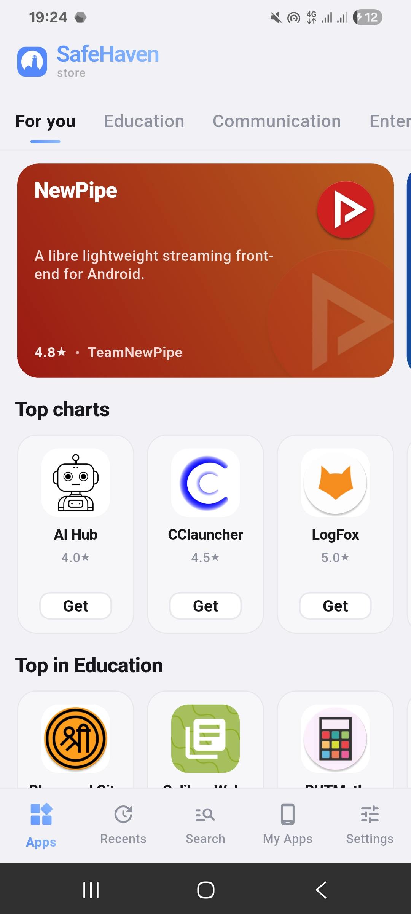

Safe Haven 看着简单，其实有四个容易踩的坑
签名冲突导致覆盖安装失败、客户端一直转圈加载不出内容、五个信任标志被当成安全评级、上游同步有应用——这四个坑我都踩过，挨个说说。
第一次用 Safe Haven 是冲着它那一排信任标志去的——感觉比 F-Droid 信息透明多了。但真正上手折腾了一两周，发现它看着简单，其实有几个不太显眼但会让你一脸懵的坑。说"一脸懵"不是夸张，我第一次踩的时候真的以为是自己手机坏了，差点把系统恢复出厂。
Safe Haven 是个独立的安卓应用商店，自己维护扫描管线、自己同步多个上游仓库、自己展示五层信任标志。定位和 F-Droid 有点像但完全不是镜像。它的官网上有五个信任标志的设计，挺清爽——但恰恰是这些"一目了然"的东西，最容易让人想当然。

坑一：从不同渠道装同一个应用，安卓不让覆盖
症状：你从 Safe Haven 装了一个 App，过阵子那边出了新版本，你从下载拿了想覆盖安装——结果安卓弹出来一句"存在签名不同的具有相同包名的应用"，装不上。反过来装也是一样，先装 F-Droid 版再装 Safe Haven 版，照样被拒。
原因：安卓的安全机制，只允许用同一个签名密钥打包的 APK 互相覆盖。问题在于 Safe Haven 从不同上游同步过来的包，签名可能完全不一样——F-Droid 同步进来的包是 F-Droid 自己重签名的，IzzyOnDroid 同步进来的保留开发者原生签名，开发者自己提交的又是另一把密钥。你以为装的是"同一个应用"，但安卓认签名不认名字。
我第一次遇到这个问题的时候，手里攥着两个版本的 APK，反复确认包名和版本号都对上了，一度以为是下载的时候文件损坏了。后来才反应过来——这不是 Safe Haven 的 bug，是安卓从一开始就这么设计的。
解法：两个办法选一个。要么固定渠道，某个应用从哪装的就一直在哪更，别两边切；要么真要换渠道，先备份应用数据，卸载旧版再装新版，别指望一键覆盖。后者有点麻烦，但换渠道是少数情况，平时注意点就好。

坑二：客户端一直转圈，以为手机网络坏了
症状：打开 Safe Haven 首页，一直转圈加载不出任何内容。分类页空白、搜索没结果、点应用详情页卡住。偶尔能打开首页但点进去就断。你第一反应可能是 Wi-Fi 断了、或者运营商抽风了。
原因：Safe Haven 没有本地离线功能——所有内容、目录、搜索、APK 下载全部走 Cloudflare Workers 后端接口。后端挂了等于整个商店用不了。但 Safe Haven 目前还是 ColourSwift 团队维护的早期项目，后端只有一台 Linux VPS 加 Workers 加 S3 桶，维护窗口和故障响应都有限。Cloudflare Workers 偶尔的小维护、或者那台 VPS 重启，几小时内你是打不开的。
还有一个细节是 Cloudflare 在国内没有自建节点，所有流量走海外边缘节点。电信用户通常最稳，移动和联通晚上高峰偶尔抽风。我自己是移动，有几个晚上 Safe Haven 死活连不上，换电信卡就正常了。
解法：排查按这个顺序来——先打开它的 Web 前端看能不能加载，Web 也挂了就是 Safe Haven 自己的问题，等几个小时；Web 正常的话检查你手机其他 App 能不能联网，都不行是手机网络问题；只有 Safe Haven 不行就试试切 Wi-Fi / 切运营商 / 开 VPN，VPN 下能连就是你的网络被 Cloudflare 临时屏蔽了。实在不行就等，它通常会自己恢复。
另外 v2.0.9 以上客户端在设置页有调试日志开关，Network 类错误会记录 HTTP 状态码，Workers 返回 5xx 就是后端的问题，403/401 罕见，通常是客户端版本过期。
坑三：把信任标志当成了安全评级
症状：看到"已验证源码"亮着就放心大胆地装，看到"未验证上架"暗着就觉得应用不靠谱，或者反过来——什么都没看见的应用直接跳过不看了。
原因：Safe Haven 反复在Safe Haven文档里说，五个信任标志是事实陈述，不是安全评级。"已验证源码"只代表开发者自己认领了这个仓库，不代表应用一定没有 bug、没有偷偷加跟踪器；"APK 扫描通过"只代表扫描引擎没检出恶意载荷，不代表引擎没漏过；"未验证上架"红色标志只代表这个条目是社区贡献的，不是开发者自己提交的——但很多社区贡献的应用恰恰是好应用，只是开发者还没来认领。
我自己一开始就是把标志当安全打分表来用的，挑应用专挑五个全亮的，结果发现有些全亮的应用体验反而不如那些只有扫描通过的。信息透明是好事，但不能反过来让它变成决策捷径。
解法：把标志当成信息条目来读，每个亮的标志告诉你一件事，综合起来判断，不要迷信任何一个。Safe Haven 自己给出的实用顺序是：有已验证源码 → 只有源码登记 → 什么都没有。第三种在别的商店里你无从分辨，在这里至少能看见它"什么都没登记"——信息透明本身就是一道过滤，但不是安全等级划分。
坑四：在 Safe Haven 里找不到某款应用
症状：你在 F-Droid 或 IzzyOnDroid 明明看到了某个应用，到 Safe Haven 里搜半天搜不到，以为是 Safe Haven 索引没同步。
原因：Safe Haven 从上游同步应用不是原样照搬，它有自己的硬过滤。超过 100MB 的 APK 直接跳过，只有 x86 架构的应用整体排除，12 个月内没更新的项目不收，包名和已有开发者提交冲突的也跳过。另外同步管线是每六小时跑一轮、单次 200 个应用五分钟超时，扫描管线偶尔也会排队拥堵。你的应用可能因为上面任何一条原因被卡在某个中间状态。
特别是 x86 架构排除这一条——模拟器用户注意，很多模拟器跑的是 x86 内核，在 Safe Haven 里装不上大部分应用，不是你的模拟器坏了。
解法：先确认你搜的应用是不是满足 100MB 以内、arm64 或 armv7 架构、一年内有更新这三个条件。如果都满足但还是搜不到，可能是扫描管线排队或者上游轮询超时了，过阵子再搜。真急的话可以去 Safe Haven 的 GitHub 提 issue。
防坑清单
- 签名统一：一个应用固定从一个渠道安装更新，别混装
- 先查 Web 前端：客户端加载不出内容时，先打开 Web 前端判断是后端问题还是你手机的问题
- 标志是事实不是评级：每个亮的标志告诉你一件事，综合起来看，别迷信某个
- 应用找不到先查过滤条件：100MB、x86、12 个月更新窗口——这三条先自查
- 调试日志帮大忙：v2.0.9+ 设置里打开调试日志，Network 错误会记录具体状态码
知道这些坑之后，Safe Haven 其实相当省心。它在信息透明度上确实比 F-Droid 走得更远，踩过几个坑就会明白——那些看起来简陋的设计选择（比如没有离线功能、签名不统一）背后都是有理由的，只是文档里不会直接告诉你"这会坑到你"。
这套资料在GitHub、Gitee 和GitCode 三个仓库都有镜像，国内用户访问选哪个都行——毕竟 Cloudflare Workers 在国内偶尔抽风，多一份镜像就多一条退路。